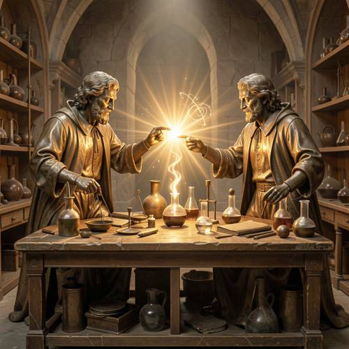
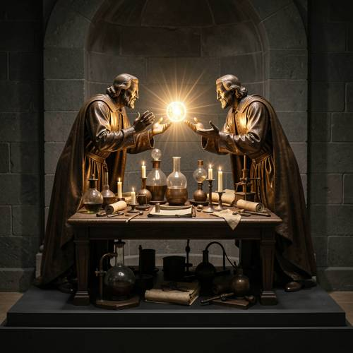
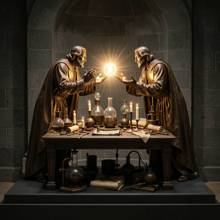

Action — Please generate a picture: a Renaissance bronze sculpture depicting tw
Please generate a picture: a Renaissance bronze sculpture depicting two alchemists performing spells across a laboratory bench, with light gathering between them.

Direct — one call, no iteration

Continuum — Kimi K3 + FLUX.2-klein-9B
Judge — Direct
PASSAction - Non-contact Interaction — The image displays two figures positioned on opposite sides of a laboratory bench. They are pointing their index fingers towards each other, and in the space between their hands, there is a bright, glowing concentration of light with radiating beams and swirling energy patterns. This visually represents the non-contact interaction of performing spells.
FAILStyle — The two central figures are rendered with a metallic texture and sheen, consistent with the appearance of bronze sculptures. However, the overall image is not a singular sculpture. The background consists of realistic stone walls and arches, and the central light effect is a luminous, non-physical element. Additionally, some items on the bench, like the glass flasks, are not depicted as part of the bronze sculpture. The image is a composition that includes bronze sculptures rather than being an image styled entirely as a bronze sculpture.
PASSWorld Knowledge — The two figures are depicted as older, bearded men in long robes, which aligns with common visual representations of alchemists. They are in a room that resembles a laboratory, filled with shelves holding numerous glass flasks, beakers, and other chemical apparatus, which are elements strongly associated with the practice of alchemy.
PASSAttribute - Quantity — The image clearly shows two distinct figures of alchemists. One figure is on the left side of the composition, and the second figure is on the right.
Judge — Continuum
PASSAction - Non-contact Interaction — The image depicts two figures, one on each side of a wooden bench. They are facing each other with their hands outstretched towards a glowing orb of light positioned between them, suggesting they are performing a spell or an experiment across the bench without physical contact.
PASSStyle — The image is presented as a sculpture with a bronze-like metallic finish and sheen. The figures' clothing and facial hair are consistent with Renaissance-era depictions. The entire scene, including the figures and the bench, is rendered in this sculptural style and placed on a dark plinth, fulfilling the 'Renaissance bronze sculpture' requirement.
PASSWorld Knowledge — The two figures are depicted as alchemists. They wear long robes and are surrounded by equipment typically associated with alchemy, such as glass beakers, flasks, scrolls, and candles, all arranged on a laboratory bench.
PASSAttribute - Quantity — The image clearly shows two distinct figures, identifiable as alchemists, positioned on opposite sides of the bench.
What the agent did
Thinking
We need answer by generating image. Must use flux2-klein generation and edit. Need likely create image based prompt. Need maybe no text so no zoom necessary. Need generate then inspect mentally via image return. We can call generate. Need compose detailed visual. "Renaissance bronze sculpture depicting two alchemists performing spells across a laboratory bench, with light gathering between them." Need ensure bronze sculpture, Renaissance style, two alchemists, across lab bench, light gathering between them. It can be stylized as sculpture photograph in museum. Generate 1024 square perhaps. Use flux2-klein. Prompt needs visual detail. Maybe "A Renaissance bronze sculpture, life-size, of two robed alchemists facing each other across a cluttered laboratory bench, hands raised, conjuring a glowing orb of light suspended between palms. Detailed patinated bronze, flowing Renaissance robes, apothecary jars, alembics, scrolls, candles on bench, dramatic chiaroscuro, museum pedestal, dark stone background, centered composition, cinematic photography, highly detailed." Potential issue if actual glowing light on bronze physically, but acceptable artistic sculpture with integrated light. Need generate.
Step 1 — `generate_image`
{
"model": "flux2-klein",
"prompt": "A Renaissance bronze sculpture on a dark museum pedestal: two life-sized alchemists in flowing Renaissance robes face each other across a cluttered laboratory bench, leaning inward with hands raised as if performing spells. A radiant orb of gathered light hovers between their palms, illuminating their bronze faces. The bench is covered with alembics, glass vessels, scrolls, candles, and ancient instruments. Rich brown patina, finely chased bronze surfaces, dramatic chiaroscuro, dark stone alcove background, symmetrical centered composition, highly detailed, realistic museum photography.",
"width": 1024,
"height": 1024
}
Result img_0

Thinking
We have image. Need inspect visually. It matches well: bronze Renaissance sculpture? Looks more golden wood? Clearly bronze metallic, two alchemists, bench, light. Maybe "performing spells" hands raised. Excellent. Need mark best. Then perhaps stop. Must last action check mark. Call mark_best.
Step 2 — `mark_best`
{
"image": "img_0",
"reason": "The sculpture clearly shows two Renaissance-robed alchemists facing one another across a laboratory bench, with gathered light between their hands and detailed alchemical instruments."
}
Thinking
Need final concise. Mention generated.
Model
Generated the Renaissance bronze sculpture scene with two alchemists conjuring light across a laboratory bench.